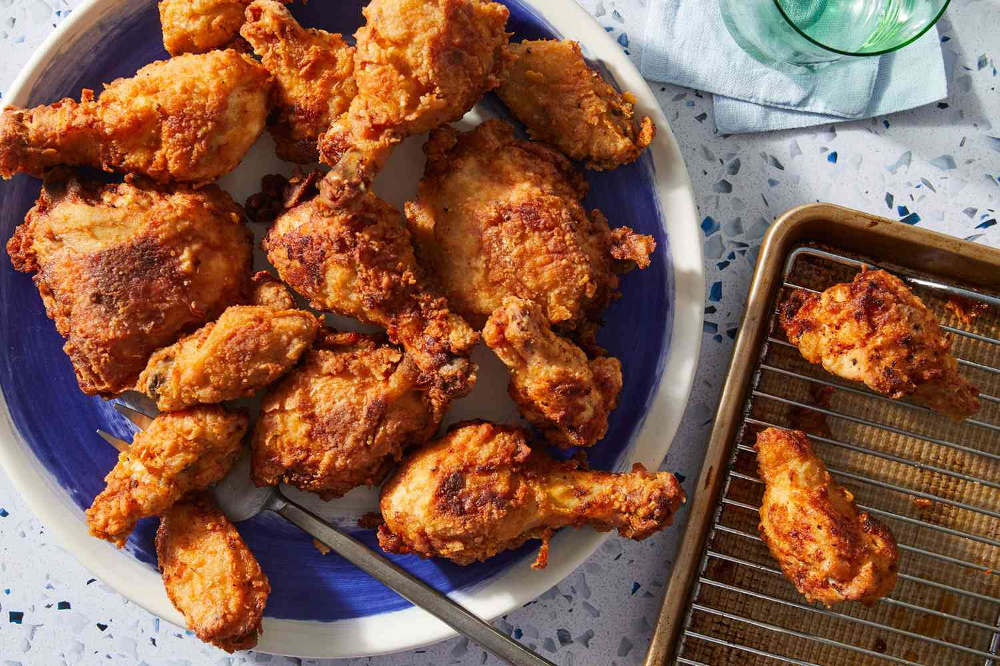

Lets get to cooking!
Nothing says Murica more than some southern fried chicken, a dish consisting of chicken pieces that have been coated with seasoned flour or batter and pan-fried, deep fried, pressure fried, or air fried. The breading adds a crisp coating or crust to the exterior of the chicken while retaining juices in the meat.
Ingredients
Marinade:
- 2 cups (473ml) buttermilk
- 1 tablespoon (11g) salt
- 1.5 teaspoons (8g) MSG
- 2 teaspoons (6g) white pepper
- 1 tablespoon (6g) sweet paprika
- 1 tablespoon (10g) garlic powder
- 4 small bones in chicken thighs
- 4 small bone-in chicken drumsticks
11 Herbs & Spices
- 3 cups (450g) of all-purpose flour
- 2.5 tablespoons (28g) kosher salt
- 1.25 tablespoons (18g) MSG
- 2 tablespoons (12g) sweet paprika
- 2 tablespoons (18g) ground white pepper
- 1 tablespoon (6g) mustard powder
- 2 teaspoons (5g) celery powder
- 1 tablespoon (12g) garlic powder
- 2 teaspoons (6g) black pepper, fresh ground
- 1 tablespoon (6g) ginger powder
- 2 teaspoons (1.5g) dried thyme, crushed
- 2 teaspoons (0.8g) dried oregano, crushed
- Vegetable oil for frying
Instructions
Method:
- In a large bowl, add buttermilk, salt, MSG, white pepper, sweet paprika, and garlic powder. Whisk until combined, then add chicken thighs and drumsticks; toss to coat and let it marinade at room temperature for 5 minutes or ideally overnight in the fridge.
- For the herbs and spice mix in a medium bowl, add flour and all the spices and whisk until combined.
- Fill up a heavy bottom pot just over halfway, at least 2” inches of vegetable oil. Heat to 330F.
- Drizzle a few tablespoons of your marinade into the flour mixture, and toss to create little balls of dredge. Remove the chicken from the marinade, then toss and press your chicken into the dredge until each piece gets coated. Repeat with the remaining chicken.
- In 2 to 3 batches, gently lay down your chicken into your hot oil, and fry for 6 - 8 minutes or until deep golden brown, and your thermometer reads to read 165F. Remove and drain on a wire rack and repeat with the rest of your chicken.
Return to top
Return to main